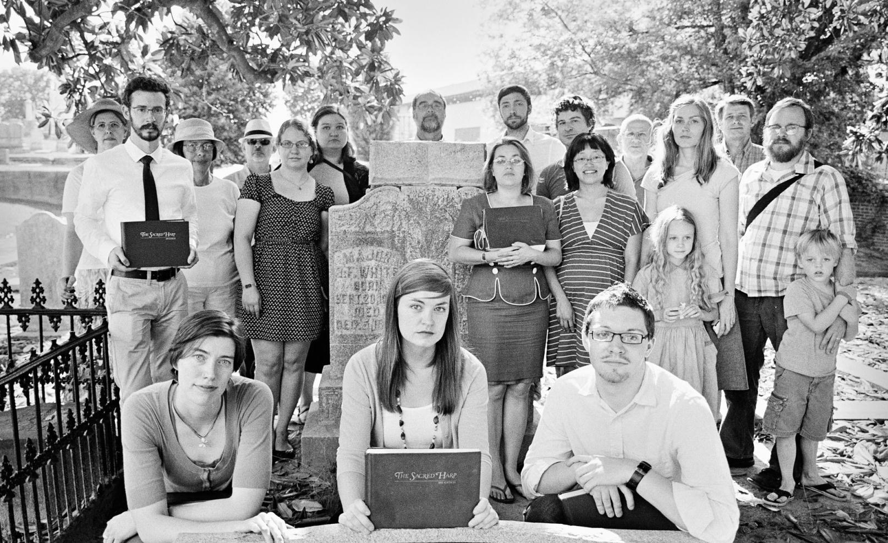

This website is the Atlanta Sacred Harp singers' guide to shape note singings in Georgia.
Check our upcoming singings page for a list of singings this month in Georgia and eastern Alabama. And join our Facebook group.
Shape note music is a 200-year-old, uniquely American style of hymn singing. This tradition is also known as Sacred Harp, after the title of the best-known shape note tunebook. These haunting 4-part harmonies are sung in powerful, exuberant style, with singers seated in an open square. We sing not for performance but for the joy of singing and the community of singers, to which newcomers are always welcome.
Georgia is in the middle of the traditional shape note heartland. The Sacred Harp was published in 1844 by Georgia residents B. F. White and E. J. King. Shape note singing survives as a living tradition in Georgia to this day. New singers from many different backgrounds are attracted to the powerful old songs and find that shape note singing is a release for the spirit and a lot of fun.
If you have not tried shape note singing before, see our what-to-expect page. For general information, see Fasola.org and Warren Steel's Sacred Harp site. But The Sacred Harp is not for reading about. It is for singing. Find a singing and raise your voice.
Atlanta Sacred Harp Singers is an informal network of people interested in participating in and promoting singing from the Sacred Harp and other shape note books in the Atlanta area. We occasionally round up a group of volunteer singers for demonstrations of Sacred Harp singing for other organizations and events. And of course, we support shape note singing with our voices at regular and special singing events whenever and wherever we can.

Additions, corrections, comments, or questions? Send us an email. Messages sent to this site go to John Plunkett, Lisa Bennett, Debora Grosse, and Shawn Taylor.